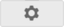
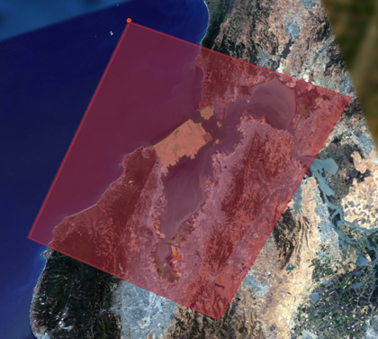

Google Earth Enterprise Documentation Home | GEE Server administration
Create Portable Globes and Maps
When you’re out in the field and you need a globe or map that can easily be stored and accessed from a desktop or laptop, you can create a portable globe or map by creating a cut of one of your databases. A portable globe or map is a single file (.glb or .glc) that stores all the geospatial data available within your specified area of interest—including all high-resolution imagery, terrain, vector data, KML files, and searchable point of interest (POI) locations. Outside the specified area of interest, the globe or map stores only low-resolution imagery and terrain. You specify the levels of resolution when you cut the globe or map.
You can create portable globes and maps with the cutter tool feature of the Google Earth Enterprise (GEE) Server, from existing GEE portable files, or you can obtain them from third-party vendors. Depending on your area of coverage, it can take only a few minutes to specify and generate a globe or map and then save it to the GEE Portable maps directory.
Cut globes and maps from existing portable files
With GEE 5.x, you can also cut globes and maps from existing portable files, convenient when you want to view a limited region of a previously cut globe or map, especially when your portable files are very large. This feature is often useful when you want to combine portable files with other .glb or .glc files to create a layered composite globe using the Assembly tool.
To cut a globe or map from an existing portable file, first you must register and publish it on GEE Server.
Cutting globes and maps from existing portable files is a new feature in GEE 5.x and is available with portable files that have been built using GEE 5.x only.
If you attempt to cut a portable file that was created using GEE 4.x, the cutting process will fail. However, you can serve portable files created using previous versions.
To determine which version of GEE was used to create a portable file, the timestamp information for the file is available for served globes or maps via http://localhost:9335/earth/info.txt on a local
Portable Server, or http://<server>/<mount_point>/earth/info.txt on Earth Server. In addition you can get the timestamp information using geglxinfo, the GEE tool for inspecting portable files.
Inspect portable files for timestamp information
To help you identify which version of GEE was used to create a portable file, you can use the portable inspection tool, geglxinfo, to get the timestamp for when the portable file was created. This information should give you a good idea of which version of GEE was used to create the file. Extract and output the earth/info.txt file, as in the following example use of the command:
$ geglxinfo --glx tutorial_3d.glc --extract_file earth/info.txt --output /tmp/info.txt
$ cat /tmp/info.txt
Portable Globe
Copyright 2013 Google Inc. All Rights Reserved.
2014-01-15 16:03:15 GMT
2014-01-15 08:03:15
Globe description: Simple container for tutorial glb with gray marble backdrop.
2014-01-15 08:03:15
Executing: /opt/google/bin/gecreatemetadbroot --output="/tmp/cutter/glc_20598_1389801795.111116/metadbroot" --layers="/tmp/cutter/glc_20598_1389801795.111116/earth/dbroot_layer_info.txt" --has_base_imagery
2014-01-15 08:03:15
SUCCESS
2014-01-15 08:03:15
Executing: /opt/google/bin/geportableglcpacker --layer_info="/tmp/cutter/glc_20598_1389801795.111116/earth/layer_info.txt" --output="/tmp/cutter/glc_20598_1389801795.111116/temp.glc" --make_copy
Composite globes and maps
Portable globes and maps can also be assembled into layers to create a composite globe or map, a single file (.glc) that contains all the geospatial data for assembled layers. To assemble a composite file, you supply a KML polygon to cut your area of interest, then specify the layers and order in which they display. See Create composite globes and maps.
Create a portable globe or map
Cutting a globe or map is accomplished with a simple web interface. You import KML, or use your mouse, to define a polygon, which defines your "area of interest." This polygon not only defines the area that displays high-resolution imagery, but is also used by Fusion to create a localized search database.
Note: The cutting processes are CPU and disk intensive, as they are retrieving all data within the specified polygon from the Earth Enterprise Server. This can affect the overall performance of the Server, including slowing end-user access.
To mitigate performance impact to end users, you may consider:
- Limiting the number of users with access to cutting.
- Creating pre-cut portable globes to host as downloadable files for portable users.
- Operating a separate GEE Server specifically to support on-demand cutting needs.
Please contact the Google Earth Enterprise Support team for further information or questions about these procedures.
Before you begin
Enable the cutter
Before cutting a globe, you must enable the cutter from the command line:
- In GEE 5.x:
gecutter enable - In earlier versions:
geserveradmin --enable_cutter
For more information about geserveradmin, see the Command Reference.
Note about authentication and SSL: Cutting is not currently supported on globes or maps that require end-user authentication such as LDAP. One workaround is to allow unauthenticated access from localhost on your Earth Enterprise Server. Refer to Apache documentation to enable such a configuration. Cutting of a globe over HTTPS is supported; however the SSL certificate of the target server will not be verified during cutting.
The globe cutter interface
To create a portable globe:
- Access the Google Earth Enterprise Server Admin console in a browser window by going to myserver.mydomainname.com/admin, replacing myserver and mydomainname with your server and domain.
- Sign in with the default credentials or the username and password assigned to you:
- Default username: geapacheuser
- Default password: geeadmin
Note: If you do not know your username and password, contact your Google Earth Enterprise Server System Administrator. - Click Databases to display the list of databases and portables pushed to the Server.
- Click the Settings button in the top right of the window:  and choose Launch Cutter from the Tools menu.
A new browser tab opens with the GEE Server — Cutting Tool and the Create new offline map window appears.
Map or globe name
- Use the drop-down menu to select the database or portable you'd like to cut to create your offline map or globe.
- Enter a name for the offline map or globe.
The name defines the filename for your offline map or globe. Offline maps are created as
.glmfiles; offline globes are created as.glbfiles. Both file types are a single-file format for sharing Google Earth Enterprise maps and globes. Spaces, slashes, and double dots (..) will be converted to underscores in the saved globe name.Building an offline map or globe will overwrite any existing offline maps or globes with the same name. If multiple users are cutting maps or globes, we recommend assigning unique prefixes to each user for their globe names to ensure that files are not accidentally overwritten. - Enter a description to be associated with the offline map or globe.
We recommend adding sufficient descriptive information for each offline map or globe, so that others will know what geographic area, or what mission, they were created for.
- If you are overwriting an existing cut, click Overwrite? to Yes.
Drawing the polygon
Once the globe or map name has been specified, you can define the geographic region to be cut by drawing a polygon on the globe. There are two ways to draw the polygon.
Hand drawing the polygon
- By default, you draw a polygon by hand so the Select Region drop-down list is set to Manual.
- Use the Hand tool
 to pan, then using the navigation controls in the plug-in, zoom in to the region of interest.
to pan, then using the navigation controls in the plug-in, zoom in to the region of interest. - To use your mouse to define the polygon, click the polygon icon in the globe window:
 .
. - Click on the map or globe to define each point. You can use the navigation controls on the right to move the globe or change zoom levels while drawing.
Click the final point at the point of origin to complete the polygon selection.

If you need to draw the polygon again, click Clear to delete the polygon you just created.
Defining the polygon with KML
You can also use KML to define the polygon(s). The KML should be complete, and may contain single or multiple
elements. To insert your KML:
- From the Select Region drop-down list, select Paste KML. The Paste KML window appears.
- Paste your KML into the text field, then click Use KML.
GEE Server validates the KML and then draws the polygon using the KML data you provided. Your polygon appears on the map or globe (the latter, only if you have the discontinued Google Earth plug-in running in your browser).
If you need to draw the polygon again, click Clear to delete the polygon you just created with pasted KML.
Globe resolution
The polygon you specify in the previous step defines your area of interest. This area contains high-resolution imagery and data, and search tabs are created for vector data within this zone. The maximum and minimum resolutions are specified as integers between 1 and 24. These correspond to the zoom levels that are used in the Fusion server. Setting a resolution of 24 results in a cut of the entire globe.
Caution: Setting a resolution of 24 to cut an entire globe may result in a very large file.
World level resolution
The area outside of the defined polygon is included in the globe at a lower resolution, which you set using World level. Areas near the polygon may be included at a higher resolution.
- To set the world level resolution, select a value from the World level: drop-down list.
A minimum zoom level of 5-7 presents a decent-looking world to the user and is most likely to include vector layers such as international boundaries and state boundaries and main cities without affecting the size of the .glb file very much. For example:
- A cut globe with minimum and maximum resolution values set to 5 is 10MB.
- A cut globe with minimum and maximum resolution values set to 6 is 41MB.
- A cut globe with minimum and maximum resolution values set to 7 is 120MB.
These numbers are small in comparison to the overall size of your globe when a suitable maximum resolution has been selected. For example, a globe that contains all of the city of Atlanta, GA, USA in 1-foot resolution requires approximately 5GB of storage. Even level 7 imagery, at 120MB, is a small percentage of the overall globe size. You can also leave this field blank to use the highest available imagery.
Region level resolution
The zoom level for the polygon area is set using Region level.
The maximum resolution of the cut polygon area is no higher than the maximum resolution of the source map or globe. For example, if the maximum resolution in the cutter is specified at 24, but the source imagery is at 18 (approximately 1-meter resolution), the cut map or globe will contain level 18 imagery. You can leave this field blank to use the highest available imagery.
You may enter a lower number to reduce the size of your map or globe, by not including the highest resolution imagery.
Advanced Settings
Polygon Resolution
The Advanced option provides an additional globe-cutting option, namely Polygon Resolution. This setting is useful when cutting with large polygons. For example, you may use 12 for a country-sized polygon or 18 for a city-sized polygon.
To set the polygon resolution:
- Click Advanced to display the Polygon Resolution option.
- Click the drop-down list to set the resolution value you want.
Continue Past Empty Levels
This option only applies to portable maps (2D databases). If a portable map does not contain imagery in the polygon at the resolution that you think it should, try recreating the portable map with this option set to Yes. This option will likely increase the build time, possibly significantly.
Building the map or globe
Depending on the size of your polygon, building your cut map or globe can take from a few minutes to a few hours; likewise, file size varies widely depending on the area selected and the desired resolution.
To build the map or globe:
- Click Cut map to start the build process.
The progress of the build appears in the Build window.
When the build is finished, a
.glbfile is created in the default globes directory,/opt/google/gehttpd/htdocs/cutter/globes, and a download link appears to the file's location on GEE Server.KML files
When a portable globe is cut from a source containing KML links in the Layer panel:
- KML files that are stored locally on the primary Earth Server will be bundled into the portable globe. Only the main KML file will be copied, not any links or files that are embedded as links in the main KML file. The default copy is not recursive.
- KML links that refer to servers other than the primary Earth Server are not copied. The layer will be visible in the client, but clicking the link will not cause any data to be displayed. If access to external servers is needed, a small KML file should be stored locally on the primary Earth Server. This KML file should contain a link to the intended external server.
Historical Imagery
Historical Imagery is not supported in the portable globe as of Fusion 4.2.
There are, however, two situations in which historic imagery will be displayed:
- When the computer running the portable globe has a connection to the Earth server from which the globe was cut. In this case, historic imagery can be streamed from the Earth server. Once in the field, however, and disconnected from the Earth server, no historic imagery will be displayed.
- If historic imagery has been cached on the portable globe machine.
Otherwise, the following error message will appear:
Google Earth can't contact the imagery server to download new images.
You'll be able to see areas that you've been to recently, but new image areas may appear blurry.
Learn more
- Serve a globe or map from GEE Portable
- Connect with GEE Portable for different ways you can connect to GEE Portable to view your offline maps and globes.
- Portable Developer Guide for ways to customize or extend GEE Portable, or create applications that work with it.